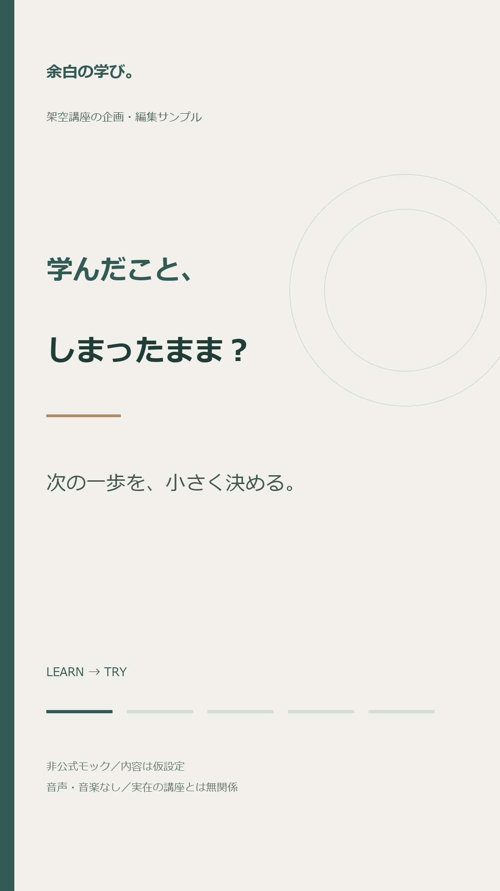
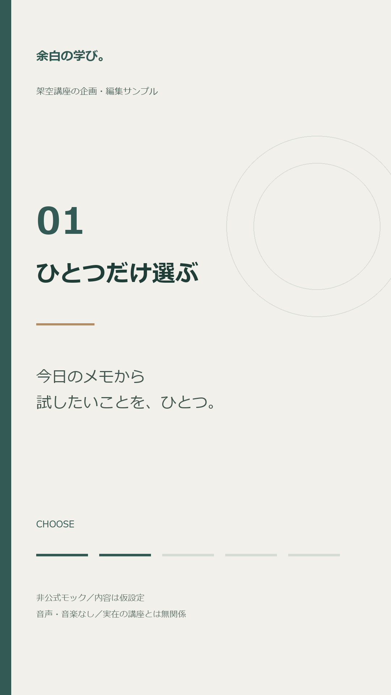
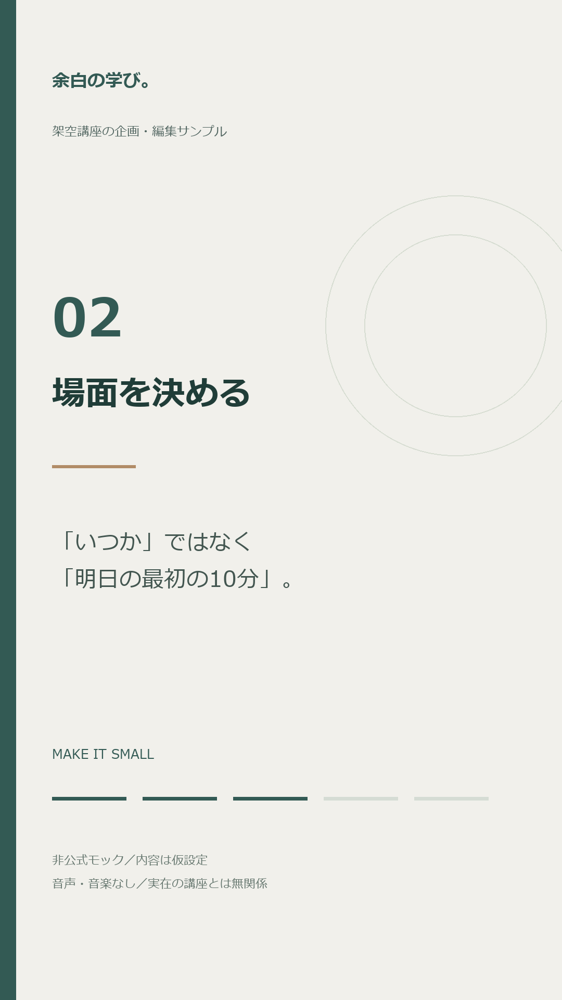
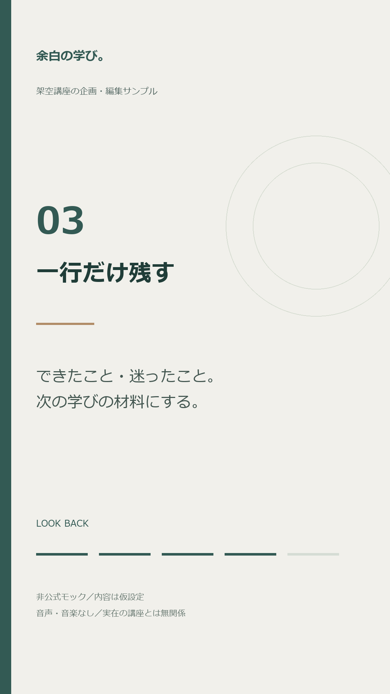
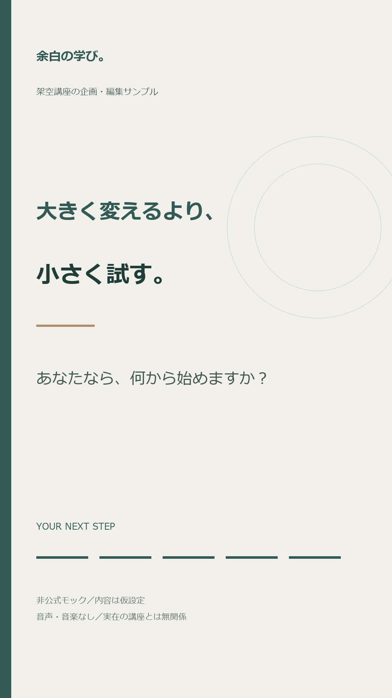

REEL EDITORIAL SAMPLE / 20 SECONDS
講座の成果を大げさに語らず、見た人が今日試せる小さな行動を伝える企画です。実在する依頼主の投稿・名前・写真を使わず、この応募のために制作しました。
1080×1920 / 24fps / 約20秒音楽・音声なし。再生は手動です。
学びたい気持ちはあるけれど、実践まで進めない人へ。「選ぶ・場面を決める・一行残す」という3つの行動を提示します。架空の成功談や効果保証は使いません。
記事1本から「読者が持ち帰る行動」をひとつ抽出し、台本→表現確認→縦動画→キャプションの順で制作します。実際のブランドカラー・既存テンプレートは共有後に反映します。




